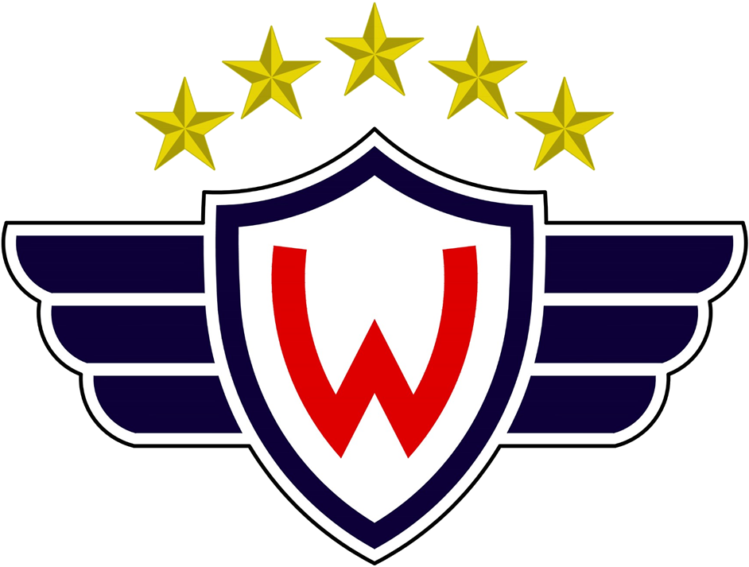

La Primera División de Bolivia conocida como Copa Tigo Bolivia por motivos de patrocinio y oficialmente como División Profesional del Fútbol Boliviano es la máxima categoría del Sistema de ligas de Bolivia. Es organizada desde 2018 por la Federación Boliviana de Fútbol (FBF) tras suceder a la Liga del Fútbol Profesional Boliviano (LFPB). Desde 2003, en cada temporada se disputa dos torneos organizados como Torneo Apertura y Torneo Clausura, coronándose a dos campeones por temporada. A partir de 2021, el campeonato boliviano está conformado por 16 clubes.
La Primera División es la única categoría con estatus profesional en Bolivia, mientras que el resto de divisiones dependen de sus correspondientes asociaciones departamentales. El campeonato profesional en Bolivia vio sus inicios con el Primer Campeonato de Primera División de 1950, en el que sólo participaron clubes del departamento de La Paz, esto debido a ser la primera región en contar con una entidad profesional de fútbol. Posteriormente y una vez alcanzado el estatus profesional, las asociaciones de fútbol de los departamentos de Oruro y Cochabamba se integraron al campeonato nacional, lo cual permitió que más regiones del país participaran del torneo, adquiriendo así una mayor competitividad. Es importante señalar que en sólo dos campeonatos se tuvo al menos a un representante de cada uno de los nueve departamentos de Bolivia, siendo estos los campeonatos de 1961 y 1964.
Desde 1950, el equipo que más campeonatos ha obtenido es Bolívar con 29, seguido por The Strongest y Jorge Wilstermann, ambos con 15. Es importante aclarar que, en los Diarios de la década de los cincuenta, se menciona que en las competiciones profesionales jugadas en La Paz entre 1950-1953 sólo se otorgó el título de Campeón de la Ciudad, también que a partir de 1954 la Federación Boliviana de Futbol instauró un novedoso campeonato denominado extraordinario o campeonato nacional.
Videos
Aqui podremos ver el día en que la selección Nacional clasificó por única vez al mundial.
Equipos (actuales) de fútbol en la liga Boliviana
Club Bolívar

Club The Strongest

Club Always Ready
Club Wilstermann
Club Aurora
Club Nacional Potosi
Club Universitario

Club Palmaflor
Club Real Tomayapo
Club Independiente
Club Universitario de Vinto
Club Oriente Petrolero
Club Blooming
Club Real Santa Cruz
Club Royal Pari
Club Guabira
Jugadores Históricos
Formato
El formato del campeonato ha cambiado a través de los años. Comenzando en 1977, la liga tenía 16 equipos separados en dos series, jugando de febrero a diciembre. A partir de 1991 esto cambió y se organizó una liga con 12 equipos jugando dos torneos al año (Apertura y Clausura), cuyos ganadores disputaban el título de Campeón Nacional. Sin embargo, a partir de 2003 se dejó de jugar la final anual y los ganadores de ambos torneos Apertura y Clausura son considerados Campeones Nacionales. En 2005 se introdujo otro cambio, cuando los equipos decidieron adoptar el calendario oficial de la FIFA jugando la temporada desde agosto hasta junio en vez de febrero a diciembre. Sin embargo, este cambio duró solo una temporada (2005/06) y en 2007 se volvió al formato de febrero a diciembre. Nuevamente en 2011, la Liga se adecuó al calendario FIFA hasta 2016/17, cuando la CONMEBOL decidió disputar la Libertadores y la Sudamericana en calendario natural y de forma paralela (febrero a noviembre). A partir de 2018 la temporada se desarrollara dentro del año natural.
Bolivia cuenta con 2 cupos a fase de grupos, 1 a primera y 1 a segunda fase previa de la Copa CONMEBOL Libertadores, y 4 cupos a Copa CONMEBOL Sudamericana. Los campeones de cada torneo tienen acceso a la fase de grupos de la Libertadores del año siguiente, y los restantes cupos de Libertadores y los de Sudamericana son distribuidos a los equipos sin premio mejor ubicados en una tabla general, sumatorias de ambos torneos. Al final de cada temporada anual, el peor equipo de la tabla de punto promedio desciende a su respectiva asociación departamental y es reemplazado por el equipo campeón de la Copa Simón Bolívar. A su vez, el segundo peor equipo de la tabla de punto promedio juega una serie contra el subcampeón de la Copa Simón Bolívar por el derecho de permanecer (o ascender, según el caso) en la LFPB.
Los clubes afiliados a la LFPB tienen la obligación de participar en todos los partidos de los Campeonatos convocados por LFPB. Aquellos que no lo hagan perderán su afiliación a la entidad. Esta determinación es independiente a la descalificación descenso de clubes motivada por otras razones Estatutarias, Reglamentarias o por efecto de la Convocatoria anual.
Desde el momento en que se aprueben los fixtures, en la fecha y números de partidos establecidos en los mismos, no podrán ser alterados ni modificados en la cantidad de partidos ni en el orden establecido. Ningún jugador podrá actuar en dos o más clubes dentro de una misma temporada. Se entiende por actuación de un jugador, el ingreso de este al campo de juego en cualquier momento de un partido, así sea por un tiempo mínimo. Los encuentros de los diferentes campeonatos organizados por la LFPB serán controlados por árbitros designados por el Comité Superior de Árbitros de la FBF.
Premios y descensos
Premios
El equipo campeón del torneo apertura obtendrá la clasificación a la Copa Libertadores como Bolivia 1 y el campeón del torneo clausura obtendrá la clasificación a la Copa Libertadores como Bolivia 2. En caso de que el mismo equipo gane el torneo Apertura y Clausura Clasificará a la Copa Libertadores como Bolivia 1 y a la Copa Sudamericana como Bolivia 1. Los cupos como Bolivia 3 a la Copa Libertadores y Bolivia 1, 2, 3, 4 a la Copa Sudamericana se definirán mediante una tabla anual.
Descensos
Al final de cada temporada anual, el equipo con menor punto promedio de la tabla desciende a su Asociación departamental y es reemplazado por el equipo campeón de la Copa Simón Bolívar. El penúltimo de la tabla juega partidos de promoción contra el subcampeón de la Copa Simón Bolívar, por el derecho de permanecer (o ascender, según el caso) en la LFPB.